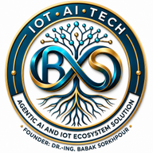
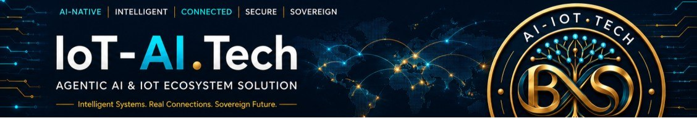
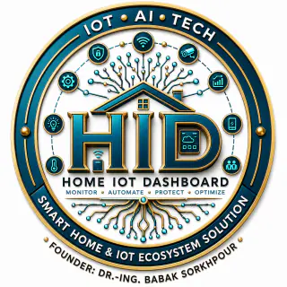
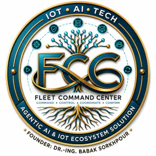
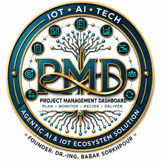
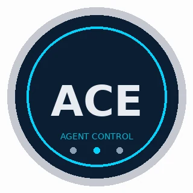
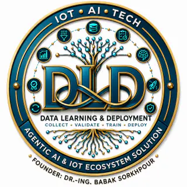

Start · working MVP
AIMDB
See which AI you run. A registry for systems, models, agents, prompts, sources and tools with owners and lifecycle notes.


Founder-led engineering company in Aschaffenburg, Bavaria. AI/IoT product portfolio coordination for industrial and regulated teams in Germany and Europe.
Design-partner pilots are one job each. They are not extra products for sale. Open a dossier only if that job matches your workflow. Seals are decorative monograms, not certificates.
Start · working MVP
See which AI you run. A registry for systems, models, agents, prompts, sources and tools with owners and lifecycle notes.
Community preview
Run a reviewable multi-coder loop. Task, Meeting and Multi-Coder. Personal and noncommercial under PolyForm Noncommercial 1.0.0. Docs · GitHub. Not a PMD replacement.
Platform · under validation
Bound what an agent may do. Connects inventory to context, policy, human authorization and outcome evidence.

Design-partner pilot
Review one edge host. Operator view for selected signals and decisions on one industrial host, with a human approval boundary for remediation.

Design-partner pilot
Review a selected fleet. Asset visibility, proposed next steps, NIS2-oriented notes and rollback evidence. Critical actions stay approval-gated.

Design-partner pilot
Prove delivery work. Keeps AI-assisted project work tied to a request, verification evidence and a human decision.

Agent control
Agent control and evidence: context, policy, human approval and operational evidence. Named on company LinkedIn as the agent-control plane.
Design-partner pilot
Consent-bound research. Living-lab work where consent, revocation and data-movement limits must stay visible.

Design-partner pilot
Keep models on your compute. Evaluation-first model work on customer-controlled infrastructure, with rollback criteria.
Website
Company website. iot-ai.tech.
Official profile: linkedin.com/company/iot-ai-tech · headline “AI/IoT Product Portfolio Coordination” · industry Artificial Intelligence · founded 2026 · Aschaffenburg, Bayern 63743.
IoT-AI.Tech applies a systematic technology-application selection approach so a local-first AI-IoT factory can become validated industrial, regulated and commercially scalable use cases for the German and European market — especially Mittelstand, infrastructure, energy, logistics, smart-city and regulated B2B environments.
“Real intelligence must have roots. AI without operational grounding creates noise. Automation without governance creates risk.” — company post
MC-GPT is the public Community control plane: one English or German sentence becomes Task, Meeting, Multi-Coder, tests, repair and an evidence report. Execution verbs request a bounded run. Review language stays read-only. Founder Accept stays human. — company update
“Say the outcome. The Suite runs the loop.” Community MC-GPT stays source-available for personal and noncommercial study. Company production, hosting and commercial forks need a written licence. — company post
On industrial work the public posture is propose-then-approve: generated change may only propose a fix. Physical mutation stays blocked until an operator approves. That is orientation, not a live plant-control claim. — company post
LinkedIn also names three priority areas: agent control and evidence; local AI compute and learning; industrial edge and operations intelligence. The company looks for pilot partners, integrators, research collaborators, public-funding partners and investors. Marketing lines that mix Community MC-GPT with a production AGPL stack are not copied here as a licence or delivery claim.
Founder. Public profile: linkedin.com/in/dr-babakskr. Doctoral record: OPUS Siegen.